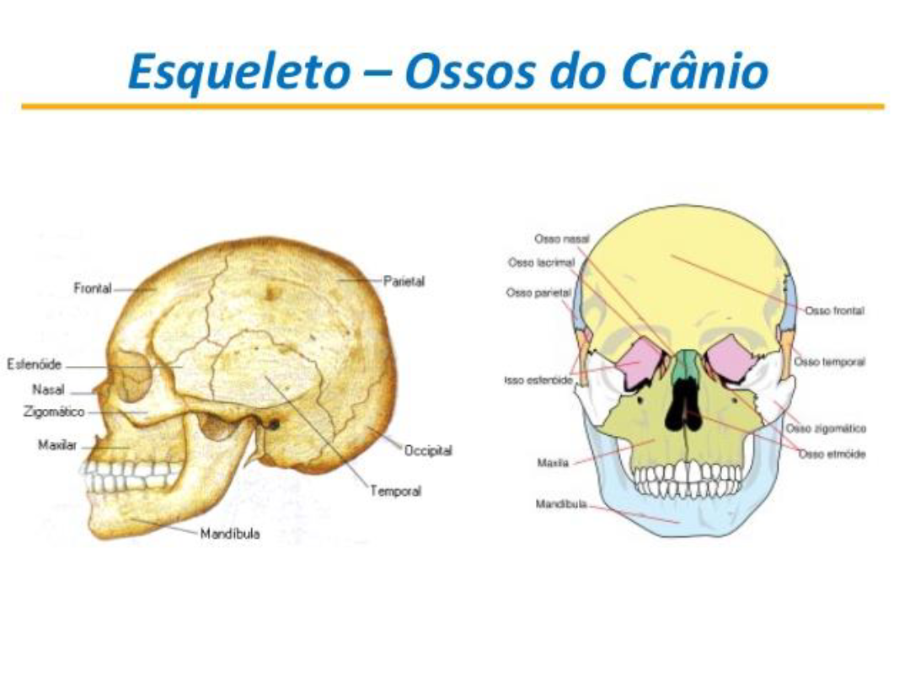
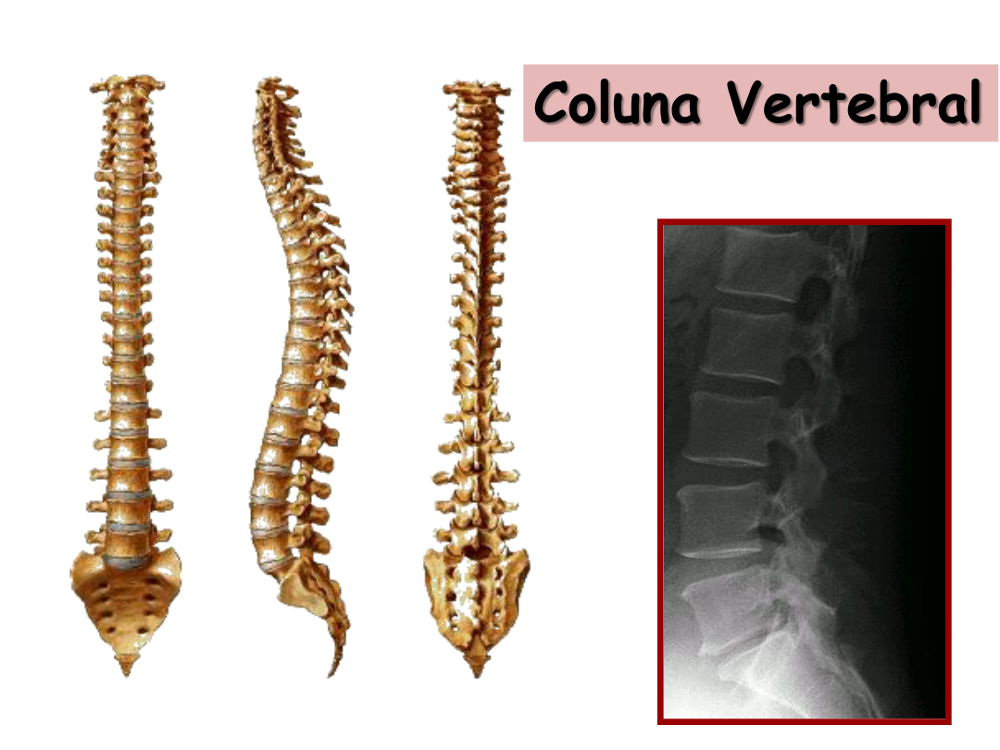

📖 Visão Geral
O crânio tem 22 ossos: 8 do neurocrânio (envolvem o cérebro) e 14 da face. A coluna vertebral tem ~33 vértebras divididas em 5 regiões.


🧠 Neurocrânio — 8 ossos
São os ossos que formam a caixa que protege o cérebro.


| Osso | Qtd | Localização/Característica |
|---|---|---|
| Frontal | 1 | Testa, teto das órbitas |
| Parietal | 2 | Lateral e teto |
| Temporal | 2 | Lateral inferior, contém o ouvido interno |
| Occipital | 1 | Posterior, tem o forame magno |
| Esfenoide | 1 | Base do crânio (forma de borboleta) |
| Etmoide | 1 | Entre as órbitas, atrás do nariz |
📍 1+2+2+1+1+1 = 8 ossos
👤 Esqueleto Facial — 14 ossos


| Osso | Qtd | Notas |
|---|---|---|
| Maxila | 2 | Forma maxila superior, palato duro, órbitas |
| Mandíbula | 1 | Único osso móvel do crânio |
| Zigomático | 2 | Maçãs do rosto |
| Nasal | 2 | Ponte do nariz |
| Lacrimal | 2 | Parede medial das órbitas |
| Palatino | 2 | Parte posterior do palato duro |
| Concha nasal inferior | 2 | Cavidade nasal |
| Vômer | 1 | Parte inferior do septo nasal |
🔢 2+1+2+2+2+2+2+1 = 14 ossos
📦 Calota, Base e Fossas
Por dentro, o crânio tem duas grandes partes: calota (teto) e base (assoalho). A base tem 3 fossas.

| Fossa | Acomoda | Ossos principais |
|---|---|---|
| Anterior | Lobos frontais | Frontal, etmoide |
| Média | Lobos temporais, hipófise | Esfenoide, temporais |
| Posterior | Cerebelo, tronco encefálico | Occipital, temporais |
🦴 Coluna Vertebral
Pilar do corpo. Protege a medula espinhal. ~33 vértebras em 5 regiões.



Regiões e número
| Região | Vértebras | Observação |
|---|---|---|
| Cervical | 7 | C1 = Atlas, C2 = Axis |
| Torácica | 12 | Articulam com costelas |
| Lombar | 5 | Maiores corpos |
| Sacro | 5 fundidas | Forma único osso triangular |
| Cóccix | 3-4 fundidas | "Caudal" |
Diferenças entre vértebras
| Característica | Cervical | Torácica | Lombar |
|---|---|---|---|
| Corpo | Pequeno | Médio | Grande |
| Processo espinhoso | Bifurcado | Pontiagudo | Quadrangular |
| Especial | Forame transverso | Fóveas costais | — |
🧠 Atlas sustenta o "globo" (a cabeça). Axis tem o "dens" — pivô para rotação do "não".
🃏 Flashcards
Clique para virar.
✅ Quiz Interativo — Escolha o tema
Cada quiz embaralha perguntas e alternativas.